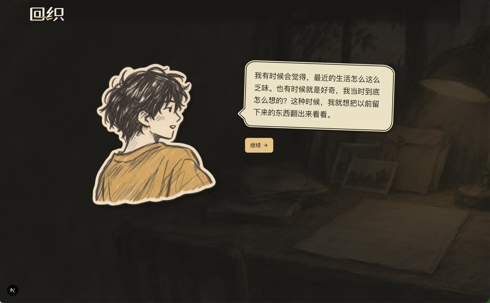

返回设计项目索引
返回设计项目索引D03 / 设计团队 · 软件展示
回织 / Prove of Time
回织是 Prove of Time 的新名字。
有时，一首歌、一张照片，或一件不起眼的小事，会在一个平常的日子里突然触动我。过了一两天，事情还记得，当时的感受却很难再说清。《The Prove of Time》起于工业设计短学期的两周创作。我用 Codex 搭了一个照片整理工具，后来把它改成「记录」与「回溯」两个入口，试着把当下写下的话做成一张日后还能打开的明信片。做到这里，我又有了一个问题：当今天遇到一个新问题，我该回到过去的哪一段去看？
这次展出的网页原型用我做这个项目时留下的对话和日记，演示了一次回溯。几次改版里，我决定下一步做什么的依据发生了什么变化？观众可以逐段读原文，看看示例中的 AI 怎样把不同日期的记录联系起来，也可以质疑它的解释。我想继续探索的是，AI 能帮我们找回哪些容易忽略的片段，又该在哪里停下来，把判断留给亲历者。
